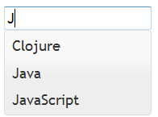
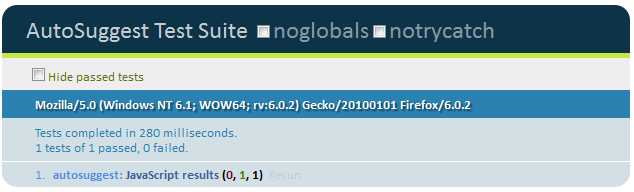
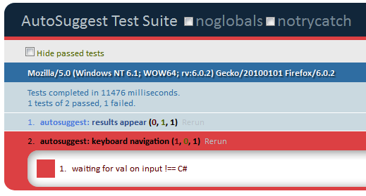
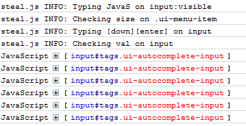
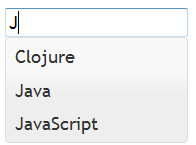
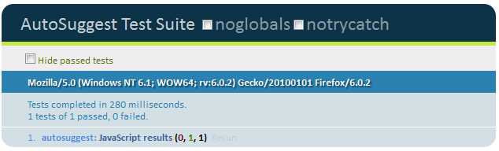
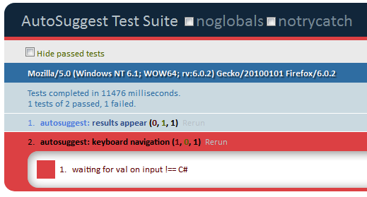
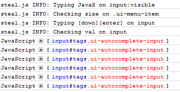

In this guide, we'll use [FuncUnit] to write functional tests for the jQuery UI
autocomplete widget. We'll go over:
Running a test in browser
Writing a test
Debugging a broken test
Running tests via Selenium
Running tests via PhantomJS
Running Autocomplete Tests
Open funcunit/test/autosuggest/autosuggest.html in a browser. Type "J" in the input. You'll see the following:

This page is a simple demo app, using jQueryUI autocomplete. It
shows results when you start typing, then you can click a result (or use mouse navigation) to populate the input.
There is a test already written. Open funcunit/test/autosuggest/autosuggest_test.js in your IDE:
module("autosuggest",{
setup: function() {
F.open('autosuggest.html')
}
});
test("results appear",function(){
F('input').visible().click().type("Java")
// wait until we have some results
F('.ui-menu-item').visible(function(){
equal( F('.ui-menu-item').size(), 2, "there are 2 results")
})
});
As you can probably tell, the F method is an alias for jQuery (*). This test:
Opens autosuggest.html
Grabs the input element, clicks it, and types "Java"
Grabs the element that is populated with results, waits for it to be visible
Asserts that there are 2 results shown
(*) Actually its a copy of jQuery that performs queries in
the application window by default, and sometimes caches its selector to run asynchronously.
To run this test, open funcunit/test/autosuggest/funcunit.html in any browser (turn off your popup blocker). The test will open and run. The results are shown in the QUnit page:

Writing an Autocomplete Test
Next we'll add a test for selecting a result with the keyboard. FuncUnit's [apifuncunit API] consists of:
The F Method - Perform a query in the application window
Actions - Simulate user actions like [FuncUnit.prototype.click click], [FuncUnit.prototype.type type], [FuncUnit.prototype.drag drag]
Waits - Wait for a condition in your page to be met. Fail the test if the condition isn't met before a timeout.
We have no assertions. This is ok. Most FuncUnit tests don't need them. If the wait conditions aren't met before a timeout, the test will fail. If the test completes, this feature is working.
The click, visible, and val methods are actually doing asynchronous things. FuncUnit lets you write tests with this linear syntax by queueing the actual methods and running them one by one. This is to prevent your tests from being an unreadable mess of nested functions like:
Reload the funcunit.html page and see your new test run and pass.
Debugging tests
Now change .val("JavaScript") to .text("C#"). Reload the page and watch it timeout and fail.

In this case, the error message shown is a good indication for why the test is broken. But often we need
more visibility to debug a test.
Your first debugging instinct might be "Let's add a breakpoint!". But, as noted, this
code is running asynchronously. When .val() runs, its adding a method to
FuncUnit.queue, not actually doing the check. When its this wait condition's turn to
run, $("input").val() === "JavaScript" is checked repeatedly until its true or a timeout is reached.
We can replace the string value with a checker function and use console.log to see what's going on. When
previous queued methods finish, this function will run on repeat. Change that line to:
"this" in your wait method is the element that .text is being run against. The console will show the following:

Conclusion
Hopefully, this guide illustrates how FuncUnit provides the holy grail of testing: easy, familiar syntax, in browser running for
easy debugging, and simple automation.
FuncUnit will transform your development lifecycle, give your developers confidence, and improve quality.
That's it! If you want to learn more, read about FuncUnit's FuncUnit API
or check out some demos.
In this guide, we'll use [FuncUnit] to write functional tests for the jQuery UI autocomplete widget. We'll go over:
Running Autocomplete Tests
Open funcunit/test/autosuggest/autosuggest.html in a browser. Type "J" in the input. You'll see the following:

This page is a simple demo app, using jQueryUI autocomplete. It shows results when you start typing, then you can click a result (or use mouse navigation) to populate the input.
There is a test already written. Open funcunit/test/autosuggest/autosuggest_test.js in your IDE:
As you can probably tell, the F method is an alias for jQuery (*). This test:
(*) Actually its a copy of jQuery that performs queries in the application window by default, and sometimes caches its selector to run asynchronously.
To run this test, open funcunit/test/autosuggest/funcunit.html in any browser (turn off your popup blocker). The test will open and run. The results are shown in the QUnit page:

Writing an Autocomplete Test
Next we'll add a test for selecting a result with the keyboard. FuncUnit's [apifuncunit API] consists of:
The setup and assertion methods are part of the QUnit API.
Our test should do the following:
Add the following under the first test:
A few important notes about this test:
Reload the funcunit.html page and see your new test run and pass.
Debugging tests
Now change .val("JavaScript") to .text("C#"). Reload the page and watch it timeout and fail.

In this case, the error message shown is a good indication for why the test is broken. But often we need more visibility to debug a test.
Your first debugging instinct might be "Let's add a breakpoint!". But, as noted, this code is running asynchronously. When .val() runs, its adding a method to FuncUnit.queue, not actually doing the check. When its this wait condition's turn to run, $("input").val() === "JavaScript" is checked repeatedly until its true or a timeout is reached.
We can replace the string value with a checker function and use console.log to see what's going on. When previous queued methods finish, this function will run on repeat. Change that line to:
"this" in your wait method is the element that .text is being run against. The console will show the following:

Conclusion
Hopefully, this guide illustrates how FuncUnit provides the holy grail of testing: easy, familiar syntax, in browser running for easy debugging, and simple automation.
FuncUnit will transform your development lifecycle, give your developers confidence, and improve quality.
That's it! If you want to learn more, read about FuncUnit's FuncUnit API or check out some demos.